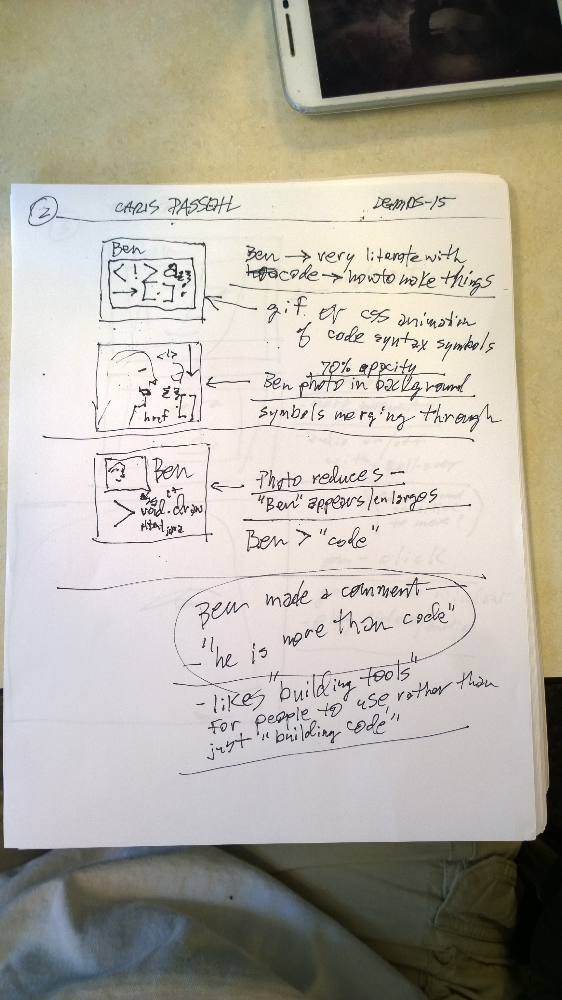
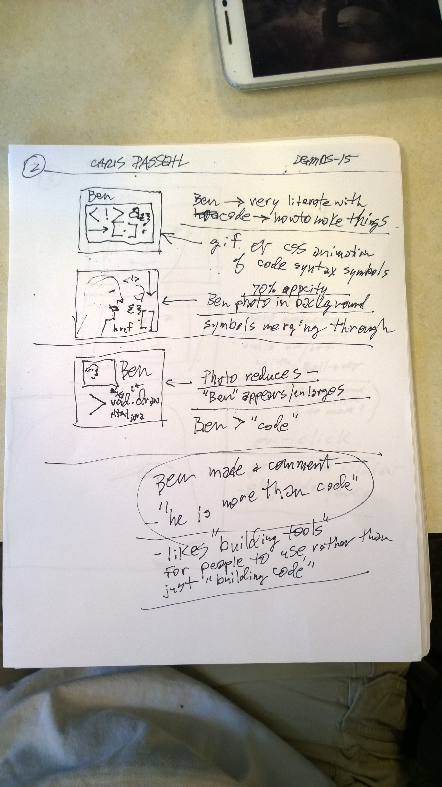

review webGL 3d material,
review spherical geometry in Processing examples
examine photo modifications with p5.js from http://jagracar.com/sketches/photoSlices.php
Initial coding for "color" project.


progress is not linear for me in this class-- I try to relate accomplishments to overall goals for the class--
w
which is to learn as much about coding as possible--------by building as many projects as possible.
Over the last few days I have tried to narrow down multiple concepts to the one I can produce.
Initial coding for "color" project.
uhhhh. Vulcan mind-meld+ so
coding will be second nature......ha, ha. all of you are providing needed help-- i know i can reach out if needed.
christopher
passehl


Mon 6.27.2016—
M
yesterday— Wed 6.220.2016— good class and lab. Photo is sky + treetops above harvard square

This is a great day to begin the journal!
 
